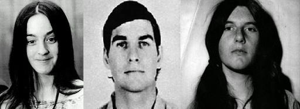

Exoterica
Sette e culti nell'età contemporanea
La Famiglia Manson
Tempo di lettura: 8 minuti
Indice
Introduzione
La Famiglia Manson, anche conosciuta con il nome inglese Manson Family o semplicemente The Family, fu una comunità hippie criminale del deserto della California e una setta fondata nei tardi anni sessanta. Guidato da Charles Manson, il gruppo era formato da circa 100 adepti che vivevano una vita non convenzionale e che utilizzavano abitualmente allucinogeni . Molti dei fedeli erano giovani donne della classe media, radicalizzatesi negli insegnamenti di Manson e provenienti dalle culture del flower power e dal movimento delle comuni.
Quando Manson uscì dal carcere nel 1967, la "Famiglia" si formò a San Francisco e più tardi si spostò in un ranch della San Fernando Valley. I seguaci di Manson includevano anche una piccola, devota unità di giovani donne e ragazze che credevano che Manson fosse una manifestazione di Cristo e nelle sue profezie sulla guerra razziale. Questo gruppo assurse alle cronache nazionali e internazionali per il cruento omicidio di Sharon Tate e quattro suoi ospiti avvenuto il 9 agosto 1969 a 10050 Cielo Drive per mano di Tex Watson e altri tre membri della Family (Susan Atkins, Leslie Van Houten e Patricia Krenwinkel), di cui Manson fu riconosciuto come mandante. Il gruppo fu poi riconosciuto responsabile di altri delitti, aggressioni e crimini di diverso tipo.

Foto segnaletica di Manson del 1968
Storia
La Family ebbe origine nell'aprile del 1967 quando Manson, scarcerato poco meno di un mese prima, era giunto a San Francisco in piena rivoluzione hippie, e aveva conosciuto una ragazza ventitreenne, Mary Brunner, di professione bibliotecaria presso la Università di Berkeley, finendo poi per stabilirsi da lei nel quartiere di Haight-Ashbury. Manson conobbe poi altre ragazze che si unirono ai suoi vagabondaggi e che spinse all'uso di droghe allucinogene e al sesso libero, sfruttando il proprio carisma e la sua abilità nel suonare la chitarra e nel comporre canzoni, arrivando ad autoproclamarsi "Figlio dell'Uomo" (Man-Son) e profeta di una nuova religione. Per fare fronte all'aumento di seguaci, Manson acquistò un vecchio bus scolastico, che dipinse di nero e usò come base mobile per scarrozzare tutta la sua "Family" in lungo e in largo per la California.
Durante il biennio 1968/1969, furono circa un centinaio le persone che, per un periodo più o meno lungo, si affiliarono alla Manson Family, sebbene solo una trentina saranno coloro che seguiranno Manson fino alla fine, e una decina di loro saranno condannati successivamente a lunghi periodi detentivi per i vari crimini commessi.
Gli eventi che culminarono negli omicidi dell'agosto 1969 ebbero inizio nella primavera del 1968, quando Dennis Wilson dei Beach Boys diede un passaggio a due ragazze appartenenti al gruppo di Manson che stavano facendo l'autostop e le portò a casa sua a Pacific Palisades per trascorrere insieme qualche ora, per poi uscire lasciandole lì a dormire. Ritornando a casa nelle prime ore del mattino dopo una seduta di registrazione in studio, trovò Manson che lo salutò come niente fosse. Dentro casa, Wilson scoprì altri dodici individui, per la maggior parte giovani donne. Wilson pagò anche lo studio di registrazione per permettere a Manson di incidere le sue canzoni, e gli presentò alcune persone del music business per introdurlo nell'ambiente, incluso Rudi Altobelli, proprietario di una casa che aveva affittato all'attrice Sharon Tate e a suo marito Roman Polański. Quando Wilson si rese conto della pericolosità effettiva di Manson e dei suoi accoliti, decise di andarsene lui da casa, senza però "sfrattare" Manson per paura di ritorsioni. Alla fine, stancatosi della cerchia di hippie strafatti e inquietanti che lo circondavano, chiese al proprio manager di mandarli via. Il gruppo finì per stabilirsi presso lo Spahn Ranch, a nord di Los Angeles, un vecchio set cinematografico e attrazione turistica ormai fatiscente. Il posto era di proprietà dell'ottantenne George Spahn, che permise alla comunità hippie di stabilirvisi in cambio di manodopera, e sesso occasionale con alcune delle ragazze di Manson. Le ragazze si occupavano anche della sua igiene personale e di cucinare per lui.
Nei primi giorni del novembre 1968, Manson stabilisce il quartiere generale alternativo della Family nella Valle della Morte, dove il gruppo occupa altri due ranch quasi disabitati.
In questo periodo, Manson scoprì The White Album dei Beatles, che era stato recentemente pubblicato. Manson divenne presto ossessionato dalla band di Liverpool. Parlava di loro in toni mistici, paragonandoli ai quattro cavalieri dell'Apocalisse e disse ai membri della Family che i Beatles erano "l'anima" e "parte del buco nell'infinito".
Già da qualche tempo, Charles Manson ripeteva che le tensioni razziali tra bianchi e neri stavano per raggiungere il culmine, e che i neri si sarebbero sollevati causando una guerra di ribellione che avrebbe messo a ferro e fuoco le città statunitensi. Durante una riunione tenutasi al Myers Ranch, Manson spiegò ai membri della Family seduti attorno a un fuoco, che i tumulti razziali erano stati predetti dai Beatles. Le canzoni del White Album, disse, dicevano tutto in codice. Infatti, secondo lui, il disco era diretto proprio alla Family, un gruppo di eletti da istruire e avvertire nell'imminenza del disastro causato dalla guerra razziale. Manson ribattezzò l'Apocalisse Helter Skelter, dall'omonima canzone dei Beatles, contenuta proprio nel White Album.
A febbraio 1969, la visione di Manson era completa. La Family avrebbe composto un album le cui canzoni, subdole come quelle dei Beatles, avrebbero predetto il caos in arrivo. La divisione tra razzisti e non razzisti tra i bianchi avrebbe causato il loro annientamento da parte dei neri. Essi però, incapaci di governare, sarebbero stati guidati dagli "illuminati" membri eletti della Family, che erano riusciti a sopravvivere alla guerra nascondendosi in un profondo pozzo nella Valle della Morte.
Nel maggio successivo, il produttore Terry Melcher si recò allo Spahn Ranch per sentire cantare Manson e le ragazze. Tornò una seconda volta poco tempo dopo, portandosi dietro un amico in possesso di uno studio di registrazione mobile, ma decise di non registrare nulla di quanto ascoltato. In giugno, Manson era ormai giunto alla conclusione che bisognava "mostrare" ai neri come dare inizio all'"Helter Skelter". La Family cominciò così ad attuare una serie di omicidi, in cui la scena del crimine era cosparsa di indizi che facevano pensare a colpevoli afroamericani, con lo scopo di innescare il panico fra i bianchi.
Omicidi
Gary Hinman
L'insegnante di musica Gary Hinman fu assassinato per via dei soldi che, secondo Charles Manson, egli doveva alla Family. Dopo averlo ucciso, Bobby Beausoleil, membro della Family, su una parete della casa scrisse col sangue della vittima "Political Piggy" ("porcellino politico") e lasciò un'impronta della mano sinistra, simbolo delle Pantere Nere[storica organizzazione politica afroamericana degli Stati Uniti], per far attribuire a loro l'omicidio. Beausoleil fu arrestato il 6 agosto 1969, otto giorni dopo l'omicidio, dopo essere stato fermato alla guida dell'auto di Hinman. La polizia trovò l'arma del delitto nel bagagliaio. Due giorni dopo, Manson disse ai membri della Family radunati allo Spahn Ranch: «Ora è giunto il tempo dell'Helter Skelter»
Tate-LaBianca
La sera dell'8 agosto 1969, Charles Manson ordinò a Tex Watson di prendere con sé Susan Atkins, Linda Kasabian e Patricia Krenwinkel (tutti membri della Family), e di recarsi a 10050 Cielo Drive (dove Manson era convinto vivesse Terry Melcher) per uccidere chiunque si trovasse lì. Dopo essersi introdotti nella proprietà, i membri della Family massacrarono cinque persone: l'attrice Sharon Tate (nuova inquilina sopraggiunta a Melcher e all'ottavo mese di gravidanza), Jay Sebring, Abigail Folger, e Wojtek Frykowski, che erano in visita alla Tate; e il giovane Steven Parent, che era stato a trovare William Garretson, il custode della proprietà, per cercare di vendergli una radio sveglia Sony, e stava andandosene proprio in quel momento. Fu il primo a morire, ucciso a colpi di pistola sul vialetto d'ingresso mentre era seduto in auto. La Atkins scrisse la parola "Pig" ("maiale") con il sangue di Sharon Tate sulla porta d'ingresso della casa. Gli efferati omicidi crearono sconcerto ed ebbero risonanza a livello internazionale.
La notte successiva, sei membri della Family, Leslie Van Houten, Steve "Clem" Grogan, e i quattro del giorno precedente, uscirono in auto insieme a Manson. Infastidito dal panico mostrato dalle vittime di Cielo Drive, Manson aveva deciso di accompagnare il gruppo "per far loro vedere come andava fatto" . Dopo qualche ora, durante le quali avevano preso in considerazione varie vittime potenziali, Manson disse alla Kasabian di guidare fino al 3301 di Waverly Drive, dove viva il dirigente aziendale Leno LaBianca e sua moglie Rosemary. Dopo averli uccisi, le ragazze scrissero messaggi usando il suo sangue. "Death to Pigs" ("Morte ai porci") e "Rise" ("Insorgete") furono le scritte che apparvero sulle pareti del soggiorno, mentre "Healter Skelter" fu scritto sul frigorifero in cucina.

Donald Shea
Un lavorante e stuntman dello Spahn Ranch, Donald "Shorty" Shea, aveva conosciuto Manson in passato e aveva avuto con lui una lite sfociata in una colluttazione. Su ordine di Manson, il 26 agosto 1969 Shea venne condotto con la forza in un luogo isolato del ranch, dove fu ucciso da Bruce M. Davis e Steve "Clem" Grogan, perché temevano che l'uomo potesse denunciarli alla polizia. Inoltre, Manson lo considerava una sorta di "peccatore" in quanto Shea aveva sposato una donna di colore; e sussisteva la possibilità che fosse al corrente degli omicidi Tate–LaBianca
Il suo cadavere non venne rinvenuto fino al dicembre 1977, dopo che Grogan, in carcere, aveva accettato di collaborare con le autorità e indicò agli investigatori dove era stato sepolto.
Da sinistra, Susan Atkins, Charles Watson & Patricia Krenwinkel, i killer di Sharon Tate
Via Wikipedia
Curiosità
-
Dopo aver conosciuto Charles Manson, Dennis Wilson, batterista dei Beach Boys, inizialmente colpito dal talento dell'uomo, volle che la sua band includesse una delle sue canzoni nel loro album 20/20 del 1969. La canzone, inizialmente intitolata Cease to exist, venne poi rielaborata e rinominata Never Learn Not To Love, senza riconoscere alcun credito compositivo a Manson, suscitando in lui non poco risentimento (anche se venne remunerato finanziariamente). Inoltre, Manson minacciò di morte Dennis quando scoprì che aveva cambiato il testo della sua canzone. Il collaboratore dei Beach Boys Van Dyke Parks ricordò in merito: «Un giorno, Charles Manson mostrò un proiettile a Dennis, e lui gli chiese: "cos'è questo?". E Manson rispose: "È un proiettile. Ogni volta che lo guardi, voglio che pensi quanto sia bello che i tuoi figli siano ancora sani e salvi"»
Ascolta qui la canzone:
-
Il cantautore e produttore discografico statunitense Marilyn Manson ha dichiarato che il suo nome d'arte è stato creato accostando il nome e cognome di due figure iconiche degli Stati Uniti degli anni sessanta, Marilyn Monroe e Charles Manson, al fine di sottolineare la bizzarra dicotomia della società come una critica e contemporaneamente un elogio nei confronti degli Stati Uniti e della loro cultura.
Tra l'altro, nel 2012 è comparsa online una lettera che Charles Manson avrebbe scritto dal carcere, indirizzata proprio a Marilyn Manson, a cui quest'ultimo però non avrebbe mai risposto.
Lettera inviata da Charles Manson a Marilyn Manson nel 2012, via mansondirect.com
“Mi ci è voluto molto tempo per arrivare nel luogo dove mi è stato possibile toccare M. Manson. Ora ho una carta da giocare. Puoi informarti sulla mia non-profit ATWA e dare a Manson quello che pensi che (Manson) meriti in cambio di Aria, Alberi, Acqua e in cambio di te stesso. Oppure darò a Manson quello che pensi che Manson si meriti – la musica sa fare di Manson il Diavolo di Abraxas. E sono SICURO che vorresti un po’ di quello che io ho avuto da dove l’ho avuto. È un equilibrio esagerato. Al di là di bene e male, giusto, sbagliato. Quello che non fai è quello che farò io – quello che hai fatto un coro, e lo lasci andare e dici che mi hai risparmiato un sacco di tappe – Non ho bisogno, non è un bisogno o un desiderio. Colpito – colpo. Ballerini fantasma uccidono insieme e tu sei proprio nella mia tomba Sunstroker Corona-coronas-coronae – mi hai visto dal basso con tutto quanto che mi gravava addosso. Ecco due camion della spazzatura che fanno lo stesso di CMF 000007″.
Metadati
Nome:
Data di formazione:
Data di scioglimento:
Fondatore:
Luogo di fondazione:
Tematiche:
Famiglia Manson
1967
1969 (arresto di Manson)
Charles Manson
San Francisco, California, Stati Uniti d'America
sette, hippie, comunità, omicidio, droghe, profeti, apocalisse, guerra razziale, famiglia, Bibbia, strage